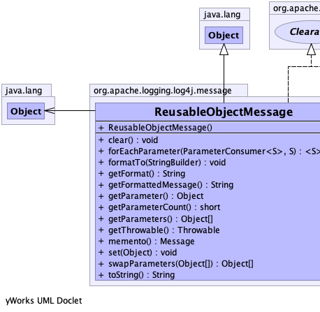
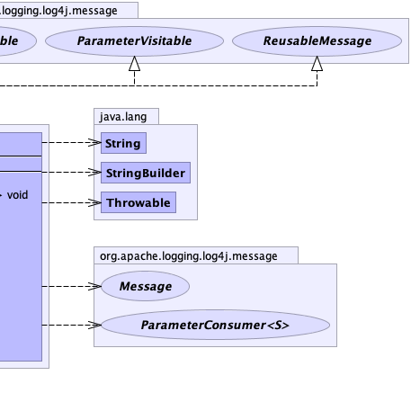

public class ReusableObjectMessage extends java.lang.Object implements ReusableMessage, ParameterVisitable
|  |  |
| Constructor and Description |
|---|
ReusableObjectMessage() |
| Modifier and Type | Method and Description |
|---|---|
void |
clear()
Resets the object to a clean state.
|
<S> void |
forEachParameter(ParameterConsumer<S> action,
S state)
Performs the given action for each parameter until all values
have been processed or the action throws an exception.
|
void |
formatTo(java.lang.StringBuilder buffer)
Writes a text representation of this object into the specified
StringBuilder, ideally without allocating
temporary objects. |
java.lang.String |
getFormat()
Returns the object formatted using its toString method.
|
java.lang.String |
getFormattedMessage()
Returns the formatted object message.
|
java.lang.Object |
getParameter()
Returns the object parameter.
|
short |
getParameterCount()
This message has exactly one parameter (the object), so always returns one.
|
java.lang.Object[] |
getParameters()
Returns the object as if it were a parameter.
|
java.lang.Throwable |
getThrowable()
Gets the message if it is a throwable.
|
Message |
memento()
Returns an immutable snapshot of the current internal state of this reusable message.
|
void |
set(java.lang.Object object) |
java.lang.Object[] |
swapParameters(java.lang.Object[] emptyReplacement)
This message has exactly one parameter (the object), so returns it as the first parameter in the array.
|
java.lang.String |
toString() |
public void set(java.lang.Object object)
public java.lang.String getFormattedMessage()
getFormattedMessage in interface Messagepublic void formatTo(java.lang.StringBuilder buffer)
StringBuilderFormattableStringBuilder, ideally without allocating
temporary objects.formatTo in interface StringBuilderFormattablebuffer - the StringBuilder to write intopublic java.lang.String getFormat()
public java.lang.Object getParameter()
public java.lang.Object[] getParameters()
getParameters in interface Messagepublic java.lang.String toString()
toString in class java.lang.Objectpublic java.lang.Throwable getThrowable()
getThrowable in interface Messagepublic java.lang.Object[] swapParameters(java.lang.Object[] emptyReplacement)
swapParameters in interface ReusableMessageemptyReplacement - the parameter array to returnReusableMessage.getParameterCount()public short getParameterCount()
getParameterCount in interface ReusableMessagepublic <S> void forEachParameter(ParameterConsumer<S> action, S state)
ParameterVisitableThe second parameter lets callers pass in a stateful object to be modified with the key-value pairs, so the TriConsumer implementation itself can be stateless and potentially reusable.
forEachParameter in interface ParameterVisitableS - type of the third parameteraction - The action to be performed for each key-value pair in this collectionstate - the object to be passed as the third parameter to each invocation on the
specified ParameterConsumer.public Message memento()
ReusableMessagememento in interface ReusableMessagepublic void clear()